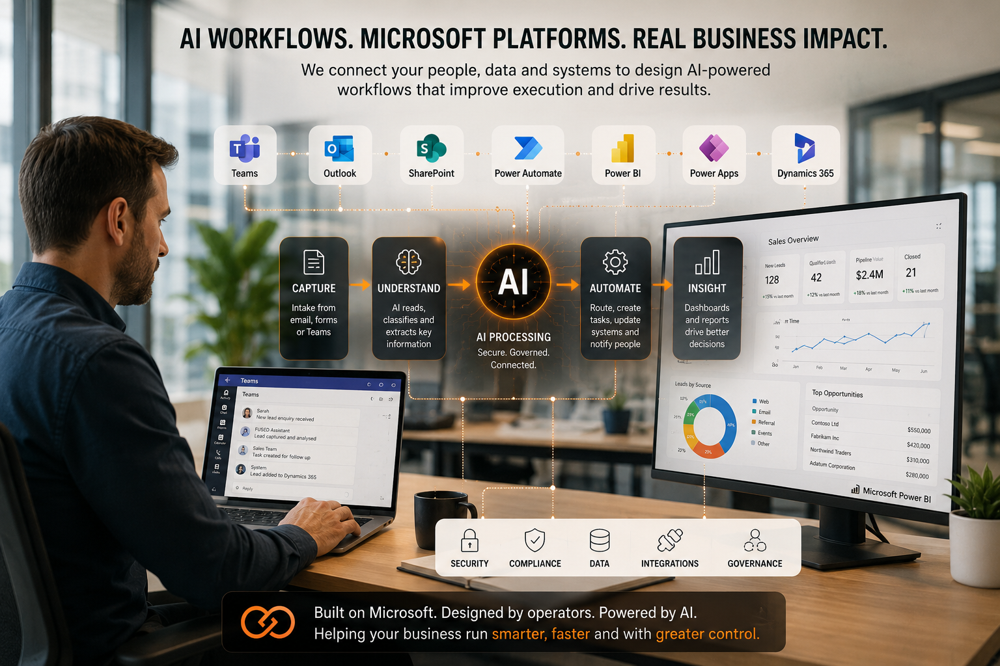

FUSED ID
FUSED ID
AI Should Reduce Management Load, Not Increase It
Most AI tools create another thing for leaders to manage. FUSED ID takes a different approach: we design AI-supported execution around your business function, your standards and your workflows.
You Stay In Control
Your team sets the direction, standards, decisions, governance and escalation points.
AI Handles Repetition
AI supports administration, research, knowledge retrieval, analysis, workflow execution and reporting.
FUSED Provides Oversight
We design, deploy, monitor and improve the system so it becomes useful business execution.
Two Ways Businesses Deploy AI
Some businesses need an AI teammate that supports an ongoing function. Others need a targeted workflow engine that solves a specific problem.
FUSED ID designs the right model around the business outcome, not around a pre-packaged product.
AI Employees
Role-based AI teammates that help run an ongoing business function.
- Sales support
- Hiring support
- Operations support
- Knowledge support
- Administration support
Deployment Engines
Specialist capability modules that automate or improve a defined workflow.
- Prospecting
- Talent screening
- Knowledge retrieval
- Continuous improvement
- Reporting and dashboards
Typical Business Outcomes
The point is not to add AI for the sake of it. The point is to improve execution where work is repetitive, inconsistent, difficult to track or overly dependent on key individuals.
More Qualified Conversations
Generate better prospect lists, improve follow-up consistency and give leaders clearer visibility over sales activity.
Less Screening Effort
Structure role intake, applicant review, interview support and shortlists so hiring becomes easier to manage.
Faster Access to Answers
Turn documents, policies, SOPs and internal know-how into searchable knowledge systems with better control.
Better Visibility and Follow-Through
Track actions, measure improvement, support root-cause analysis and reduce the chance that work disappears.
Role-Based AI Teammates for Ongoing Execution
AI Employees are structured, role-based deployments aligned to a business function. Each one is configured around your workflows, tools, standards and operating rhythm.
Ethan — Sales Operator
Supports prospect research, outreach preparation, follow-up rhythms, CRM updates and pipeline visibility.
- Prospect research
- Lead enrichment
- Follow-up support
- Sales reporting
Kaia — Quality & Improvement Operator
Supports quality actions, improvement tickets, KPI tracking, root-cause workflows and ISO-style governance.
- Quality actions
- Improvement tracking
- Root-cause support
- KPI reporting
Lara — People & Culture Operator
Supports hiring coordination, onboarding, reviews, engagement rhythms, internal communication and compliance support.
- Hiring workflows
- Onboarding support
- People process coordination
- Communication support
Nova — Custom AI Operator
A flexible AI teammate configured around your workflows, communication style, tools and operational priorities.
- Custom workflows
- Admin support
- Knowledge support
- Operational coordination
Specialist Skills Embedded Into the Deployment
Engines are not separate products the client has to manage. They are capability modules FUSED ID can embed into an AI Employee or deploy as a targeted workflow.
FusedProspecting
For finding, enriching, sorting and engaging prospects with better structure and reporting.
- ICP definition
- Domain hunting
- LinkedIn hunting
- Prospect enrichment
- Smart segmentation
- Pipeline reporting
FusedTalent
For improving recruitment workflows from role intake through to shortlist preparation.
- Role creation
- Advert support
- Candidate screening
- Interview analysis
- Sentiment and gap analysis
- Shortlist generation
FusedKnowledge
For turning internal knowledge into a controlled, searchable and practical support layer.
- Document ingestion
- Policy retrieval
- Staff Q&A
- Source-backed answers
- Conflict detection
- Knowledge governance
FusedKaizen
For managing improvement, quality actions, root-cause workflows and operational visibility.
- Improvement tickets
- Approvals and ownership
- ROI calculation
- Root-cause analysis
- KPI dashboards
- Audit reporting

Built Around the Tools Your Team Already Uses
Where practical, FUSED ID builds around Microsoft 365, Teams, Outlook, SharePoint, Power Automate, Power BI, Power Apps, Power Pages and Dynamics 365.
This gives businesses a more familiar operating environment, stronger visibility and less dependency on obscure custom systems.
- Works with existing tools where practical
- Supports visibility and governance
- Reduces platform sprawl
- Keeps the business closer to its own systems
See How These Systems Have Been Used
Quality & Continuous Improvement
NCRs, OFIs, root-cause analysis, corrective actions and improvement visibility.
View Deployment →Prospecting & Lead Intelligence
AI-supported research, categorisation, prioritisation and outreach preparation.
View Deployment →Talent Screening
High-volume CV review, role-fit assessment, shortlisting and screening support.
View Deployment →AI Might Be Smart. It Is Not Wise.
Successful deployments still need leadership, judgement, governance, business experience and continuous improvement.
FUSED ID combines AI capability with experienced operators who understand the work itself — the judgement, risk, exceptions and real-world details of how work is done.
Business Context
The deployment is shaped around the function, the people, the standards and what good looks like.
Governed Execution
Systems include review points, escalation paths, quality checks and human oversight where it matters.
Improved Over Time
Deployments are monitored, refined and improved as the business evolves.